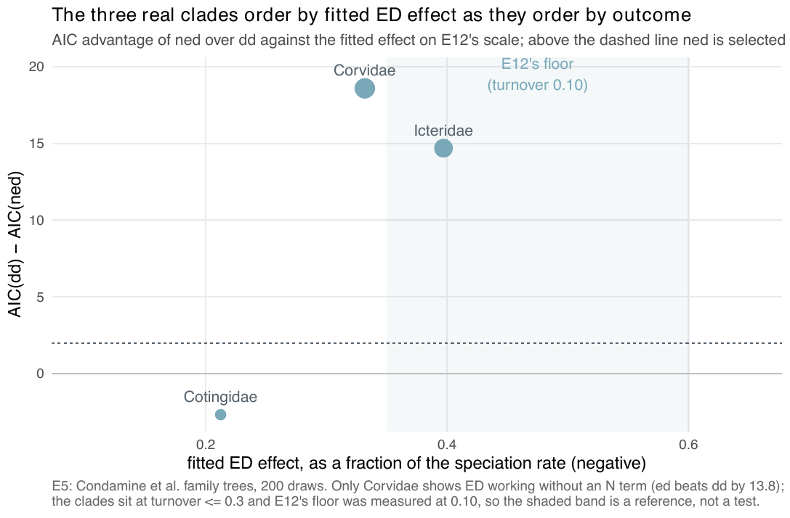

E5 — does the workflow run end to end on real dated trees?
| Status | complete; historical: a method-development step; not a current result (its linear-link fits are replaced by E28's exponential-link ladder, its exact cr check by E42) |
| Package build | not recorded per run; the design's build under test at registration (2026-09-18) was a38a9e8 |
| Driver / analysis | sim/E5-atlas.R (--stage screen, --stage fit), sim/E5-tables.R |
| Data | results/E5/screen.csv (47 rows), chosen.csv (3), fits.csv (24) |
Question
The claim under test: the workflow runs end to end on real dated trees and returns the diagnostics a user needs to judge a fit (AIC table, effective sample, agreement with an exact reference). Every earlier experiment was on simulated trees; E5 is the first contact with deposited phylogenies, and the first place an ED effect could be looked for on data.
Design
Trees. The Condamine et al. (2019) family-level dated trees deposited in the phylo-species-atlas, with 50 to 200 tips and a sampling fraction \(\rho = \text{tips} / \text{the family's species count in the atlas's class tree}\) of at least 0.5: 47 families (33 bird, 10 mammal, 3 squamate, 1 amphibian; sim/data/atlas-candidates.csv). The deposited tip depths spread by 2 to 19% of the crown age; every tip edge is extended to the deepest tip, and a tree whose spread exceeds 15% is refused (Macropodidae, 19%).
Stage 1, the screen. Every candidate fitted with cr (surrogate/BDI proposal, \(N = 200\) draws) at its \(\rho\), with DDD::bd_ML (the missing species as missnumspec) as the exact reference.
Stage 2, the choice. Among the families that fitted, with turnover \(\hat\mu_0/\hat\lambda_0 \le 0.3\) and tip spread \(\le 0.10\): one per size tercile, the lowest turnover, ties (most have \(\hat\mu_0 = 0\)) broken by the highest \(\rho\) and then the larger tree (sim/E5-atlas.R lines 111-114).
Stage 3, the fits.
| setting | value |
|---|---|
| models | dd, ed, ned at \(N = 200\); ned with five seeds; ned at \(N = 2000\) |
| link | linear |
| proposal | thinning (dynamic_fresh) |
| box | anchored on the cr screen estimate |
| iterations | max_iter 200 |
| clock | 1 h per fit at \(N = 200\), 4 h at \(N = 2000\) |
Pre-set rule
Descriptive: the AIC table, \(\hat\beta_{ED}\) with the between-run spread of five seeds, the final effective sample, and the \(N = 2000\) agreement. "The section is an illustration of the workflow and its diagnostics; it makes no biological claim, and says so."
Results
Screen. 47 screened, 46 fitted (Macropodidae refused for its 19% tip spread). Every cr fit returned 200 effective draws of 200 (under cr the surrogate is the model), in 1 to 34 s. The MCEM log-likelihood is within 0.53 nats of DDD::bd_ML on every family (largest: Eleutherodactylidae 0.53, Echimyidae 0.42, Varanidae 0.40). \(\hat\mu_0 = 0\) on 43 of 46; the three with non-zero turnover are Pipridae 0.112, Rhinolophidae 0.176, Procellariidae 0.220.
Chosen. Cotingidae (65 tips, \(\rho = 1\), crown 24.6 Ma), Icteridae (102, 0.971, 14.5 Ma), Corvidae (120, 0.968, 30.5 Ma), all at \(\hat\mu_0 = 0\).
Fits (results/E5/fits.csv):
| clade | AIC dd |
AIC ed |
AIC ned (seed 1) |
ned range over 5 seeds |
AIC(dd) - AIC(ned) | AIC(dd) - AIC(ed) | ESS ned (of 200) |
fitted ED effect |
|---|---|---|---|---|---|---|---|---|
| Corvidae | 757.3 | 743.5 | 738.7 | 738.7-739.4 (0.64) | +18.6 | +13.8 | 47-93 | -0.33\(\lambda\) |
| Icteridae | 516.8 | 519.2 | 502.1 | 502.1-502.4 (0.31) | +14.7 | -2.4 | 70-109 | -0.40\(\lambda\) |
| Cotingidae | 407.7 | 413.0 | 410.3 | 410.3 x5 (0.00) | -2.7 | -5.3 | 200 x5 | -0.21\(\lambda\) |
The fitted ED effect is \(\hat\beta_{ED}\cdot\overline{\mathrm{ED}}/\hat\beta_0\), the scale of E12. Stop reasons over the 24 fits: 21 on max_iter (200 iterations), 2 converged (the ed fits of Corvidae, at 174 iterations, and Icteridae, at 106), 1 on its clock (Corvidae ned at \(N = 2000\): 3 iterations in 17.5 h, AIC 743.5, ESS 978 of 2000). The \(N = 2000\) fits give effects -0.238 (Corvidae, the 3-iteration fit), -0.397 (Icteridae), -0.212 (Cotingidae). On Cotingidae, at \(\rho = 1\) and \(\hat\mu = 0\), the thinning proposal returns 200 of 200 and the five seeds give identical fits.

ned-over-dd margin against their fitted ED effect on E12's scale; the shaded band is where E12 selected ned on most trees at turnover 0.10. Corvidae and Icteridae lie above the 2-AIC line, Cotingidae below; the band was measured at a different turnover, so it is a reference and not a test (that is E16).
Conclusion
Met as a description: the workflow ran on all 46 accepted trees and returned the AIC table, the effective sample and an exact cr reference within 0.53 nats on every one. On the three fitted clades ned beats dd by 18.6 and 14.7 AIC on Corvidae and Icteridae and loses by 2.7 on Cotingidae; only on Corvidae does ed (no \(N\) term) beat dd (by 13.8). The fits are unfinished: 21 of 24 ended on the iteration cap. The record's adversarial pass graded the result "weakened": the three clades were chosen for low turnover and tidy tip depths, and the comparison with E12's floor crosses turnovers (0.10 there, up to 0.3 here), which is what E16 and E17 were run to address.
Two statements in the report about this experiment are off against fits.csv: "every one ending on max_iter" (21 of 24 did), and "over five seeds the NED AIC moves by less than 0.6" (Corvidae moves by 0.64). The extinction slopes on ED in the report's table (-0.008, -0.013, -0.008) do not match seed 1 (-0.0056, -0.0108, -0.0077); which seed or summary the table used is not recorded. Over seeds 1-5 in fits.csv (ned, N = 200) Corvidae's mean and median both round to -0.008 and Cotingidae gives -0.0077 on every seed, while no seed, median (-0.014) or mean (-0.017) of Icteridae gives -0.013. These are linear-link fits; the exponential-link numbers of E25 and E28 are different fits and are not to be set beside these in one sentence.
Related
- E12 — the selection floor at turnover 0.10 the clades were read against.
- E16 — the same floor at turnover 0.25, where the clades sit.
- E17 — parametric bootstrap of the three margins found here.
- E25 — the same three trees under the ladder on the exponential link.
- E26 — all 47 screened families under the whole workflow.